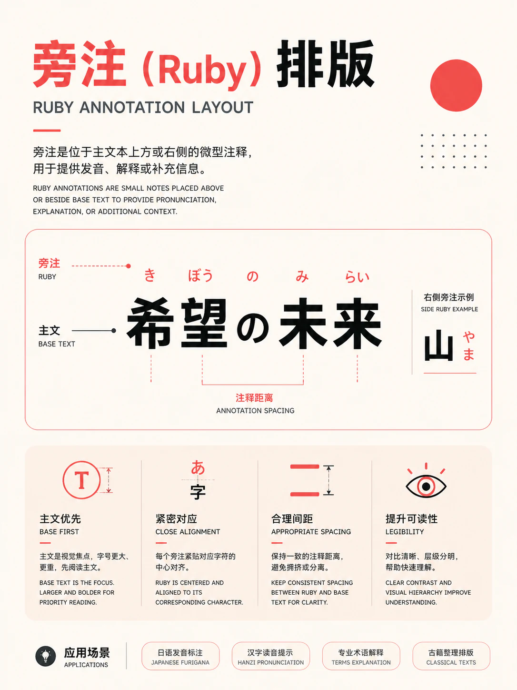

01
从 5.5 磅活字到 Web
ORIGIN · FROM 5.5PT LEAD TYPE TO W3C RUBY
为什么东亚文字旁边的注音，英文偏偏叫「红宝石（Ruby）」？答案藏在 19 世纪的金属活字模数里。
在早期铅活字工坊，文字必须靠精准的铅块高度拼接才能锁进印版。正文用约 10.5pt 的五号活字时，旁边注音如果刚好用一半大小的七号活字（约 5.25pt，对应英国 5.5pt 的 Ruby 活字），两枚注音假名并排恰好严丝合缝等于一枚正方形汉字，排版工人不必额外塞满铅条垫空。
五号正文（10.5pt）配七号旁注（5.25pt），得名「ルビ」
明治时期 · 日本号数活字
两枚七号 = 一枚五号
- 主文铅字
- 五号活字 ≈ 10.5 pt
- 旁注铅字
- 七号活字 ≈ 5.25 pt
02
三种挂接：单字、熟语、词组
ATTACHMENT · MONO-RUBY, JUKUGO-RUBY & GROUP-RUBY
W3C《日语排版需求（JLReq）》第 3.3 节把旁注挂接细分为三种结构：单字旁注（Mono-ruby）一字一注，熟语旁注（Jukugo-ruby）词内借位平滑分配，词组旁注（Group-ruby）跨整词居中。拖下面这条栏宽拉杆，看三种排法在撞到行尾时谁能自然换行、谁会把版面撕出豁口。
熟语旁注
JUKUGO-RUBY词组旁注
GROUP-RUBY
HTML & CSS RUBY REFERENCE
03
暗室解剖：行距与悬挑碰撞
COLLISION · LINE-HEIGHT INVERSION & OVERHANG
单行好看的旁注，放进连续段落往往当场翻车。原因只有两个：垂直方向上，若注距偏大或行距不足（经验值建议放宽至 1.85×–2.2×），下一行的旁注会贴近上一行底脚导致归属倒挂；横向方向上，宽音节若关闭悬挑（ruby-overhang: none），会把主文撕出一条条突兀白洞。
垂直撞行0 处
横向撕裂0 处
上行净空0 px
启用旁注0 处
试着把行距拉过 1.90×、注距收回 12%，再打开「半字悬挑」并切换到「选注音」，看看红框与黄洞如何一并清零。
04
四大场景与横竖变体
APPLICATIONS · FOUR REAL EDITORIAL CONTEXTS
原海报底沿列出的四个应用场景，对应着完全不同的排印规矩：横排放在主文上方，直排放到主文右侧；启蒙教材可以逐字满注，成人书刊则只点注难字。点下面原海报样式的四枚场景药丸，直接在纸页样本里切换并开闭旁注体验阅读负荷。
直排右置 · 选注音（パラルビ）
05
什么时候别用旁注
WHEN NOT TO USE · LIMITS & ALTERNATIVES
1938 年 4 月，日本作家山本有三在岩波书店刊行的《戦争と二人の婦人》后记〈国語に対する一つの意見〉中，把密密麻麻的全篇振假名比作「成排爬行的黑虫（黒い虫の行列）」，呼吁与其靠满页旁注硬撑难词，不如把正文写得平易好读。
同年日本内务省警保局亦向幼少年读物发出废除全注音的指导。这段公案提醒排版者：旁注是按需递出的梯子，不是塞进大段说明或炫耀生僻字的容器。
解释超过 6–8 字时别用
踩坑现场
此书采用了包背装工艺。
更优替代
此书采用了包背装[1]工艺。
[1] 把印页反折、粘牢书背再整张包上封皮的宋元装帧法。
长解释会把主文硬生生扯断成两截；改用上标编号配脚注或边注，主文流才不断气。
正文低于 13px 时别用
踩坑现场
薔薇与霜叶在极小字号下，50% 旁注跌破 7px，声调与浊点直接糊成灰斑。
更优替代
在信息密区直接改用行内括注：蔷薇（qiáng wēi）与霜叶，字号一致且屏幕清晰可读。
12px 正文的半字旁注仅 6px，低于常规阅读下限（约 9–10px）；空间紧时用括号平排更稳妥。
成人读物别通篇满注
踩坑现场
今天的天气很好，我们看书。
更优替代
今天的天气很好，我们重读这篇校勘扎记。
常见字全加注只会制造高密度视觉噪点；只给易误读多音字和首次出现的生僻词加注。
需精确复制的数据文本慎用
踩坑现场
用户复制带注词条「希望」粘贴进搜索框，常变成无法命中的 希望きぼう。
更优替代
合同编号、代码与检索词保持纯文本，必要时把读音放进独立字段或悬浮提示。
W3C 国际化缺口分析也专门指出：不同浏览器对带 <ruby> 文本的框选复制与页内查找行为并不统一。
06
小练习：四选一排印审校
EXERCISE · SINGLE-VARIABLE TYPESETTER'S PROOF
07
原海报与同类版式
ORIGINAL POSTER & EAST ASIAN FAMILY

原海报核心摘录
「旁注是位于主文本上方或右侧的微型注释，用于提供发音、解释或补充信息。」
Ruby annotations are small notes placed above or beside base text to provide pronunciation, explanation, or additional context.
- 主文优先（BASE FIRST）：主文是视觉焦点，字号更大、更重，先阅读主文。
- 紧密对应（CLOSE ALIGNMENT）：每个旁注紧贴对应字符的中心对齐。
- 合理间距（APPROPRIATE SPACING）：保持一致的注释距离，避免拥挤或分离。
- 提升可读性（LEGIBILITY）：对比清晰、层级分明，帮助快速理解。
日语发音标注
汉字读音提示
专业术语解释
古籍整理排版
同小类：东亚文字与混排
以下 9 页与旁注排版分工互补，各自展开对应方向与混排细则：